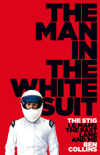

About us
Welcome to our site. Here you can browse the best sports books we find especially for you, saving you the hassle of going to your local library or bookstore to search the shelves for what interests you. Sports enthusiasts will love a selection of bestsellers from the best athletes from around the world. We know what sports fans love, and our bestseller list contains all the best products.
Books
We present the top 10 best sports books. Read and enjoy!
-
Taking le Tiss
 4.9
4.9
The fascinating, insightful and at times hilarious memoirs of one of the most gifted and enigmatic British footballers of the last 25 years.Nicknamed «Le God» by the Southampton faithful, Matt Le Tissier was not cast from the same mould as 99% of other professional footballers. A real «one-off» if ever there was one, he was a one-club man in a 16-year career that brought little in the way of trophies but countless plaudits from footballs fans and commentators alike.
-
Open Side: The Official Autobiography
4.9
Updated edition featuring a brand new afterword‘A terrific book. No one put their body on the line quite like Sam Warburton.’ Brian O’Driscoll‘It was an absolute privilege to play against Sam. An inspiring leader with an equally inspiring story to tell.’ Jonny WilkinsonSam Warburton OBE was not only a titan of Welsh rugby, but an icon of the game. Having represented his country as a player and team captain at all junior levels, he propelled himself to international attention in 2011 when named as the youngest ever captain of Wales for the Rugby World Cup.Despite his tender age, Sam’s immense displays for club and country were recognised still further in April 2013, when, at just 24, he was named the Lions' captain for the extraordinary 2013 tour to Australia.
-
Frankel
4.9
In horse racing greatness is defined by speed. Being the second fastest counts for little. You have to win. And win. And keep winning until every challenger of your generation is put to the sword. Of the twelve horses lined up on Newmarket Heath that 2011 day, one would do just that. And more. To become the greatest racehorse that has ever lived.
-
Etape
4.8
In ETAPE, critically acclaimed author Richard Moore will take readers on a virtual Tour de France, with each chapter focusing on a single rider in a single stage that came to define the Tour’s history.In Étape, critically acclaimed author Richard Moore tells the stories behind some of the defining stages in the Tour de France’s history through the eyes of the protagonists: the heroes and villains, stars and journeymen.
-

The Man in the White Suit
4.8
The Stig gets his kit off and reveals how he came to be Top Gear's iconic racing driver and so much more – including what it's like to thrash an Aston Martin DBS, train for the Army and face the terror of Jeremy Clarkson's underwear…When the Black Stig disappeared off the end of an aircraft carrier in 2003, we were introduced to The White Stig. Faster.
-
How to Build a Car
4.7
'Adrian has a unique gift for understanding drivers and racing cars. He is ultra competitive but never forgets to have fun. An immensely likeable man.' Damon HillThe world’s foremost designer in Formula One, Adrian Newey OBE is arguably one of Britain’s greatest engineers and this is his fascinating, powerful memoir.How to Build a Car explores the story of Adrian’s unrivalled 35-year career in Formula One through the prism of the cars he has designed, the drivers he has worked alongside and the races in which he’s been involved.
-
The Mixer: The Story of Premier League Tactics, from Route One to False Nines
4.7
An absolutely essential book for every modern football fan, about the development of Premier League tactics, published to coincide with 25 years of the competition.Back in 1992, English football was stuck in the dark ages, emerging from a five-year ban from European competition. The game was physical, bruising and attritional, based on strength over speed, aggression over finesse.
-
My Brother, Muhammad Ali - The Definitive Biography (Unabridged)
4.7
More words have been written about Muhammad Ali than almost anyone else. He was, without doubt, the world's most-loved sportsman. At the height of his celebrity, he was the most famous person in the world. And yet, until now, the one voice missing belonged to the man who knew him best-his only sibling, and best friend, Rahaman Ali.
-
Dream. Believe. Achieve. My Autobiography
4.7
If I had to lose my record to anyone, I couldn’t be happier that it was Jonathan. Family connections aside, there is nobody more talented, more determined or more deserving.’ – Carl FogartyWithin the staggeringly dangerous and high-pressure sport of professional motorcycling, Jonathan Rea’s achievements are unprecedented.
-
250 Days
4.7
An incredibly entertaining and perceptive look at the most controversial moment in Premier League history.25th January 1995 A cold winter’s evening. Manchester United away against Crystal Palace at a packed-out Selhurst Park. Eric Cantona, United's mercurial talisman, has been man-marked closely all game by Richard Shaw and become increasingly frustrated.